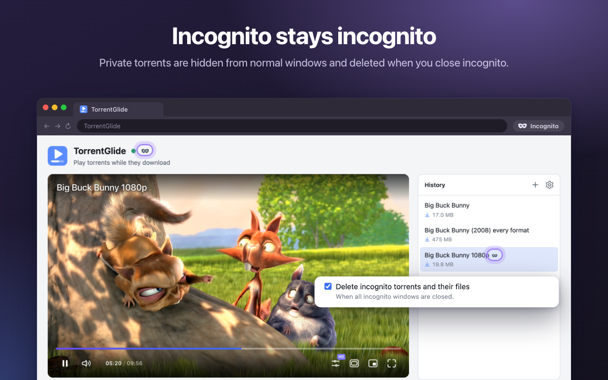

所有下载
工作原理
捕获种子链接
点击任意站点上的磁力或 .torrent 链接，选择“用 TorrentGlide 打开”，或者让浏览器照常处理。
你的电脑会下载
免费开源的种子服务 rqbit 会在你的电脑上加入下载群体，并优先获取播放位置下方的片段。
立即观看
播放器在浏览器中解码 MKV、HEVC、AVI 等格式，支持字幕和季包。无需等待其余部分即可快进。
截图



设计即隐私
无账号、无中间服务器、无追踪。扩展只与你自己电脑上的种子服务通信，此页面没有分析工具或 Cookie。